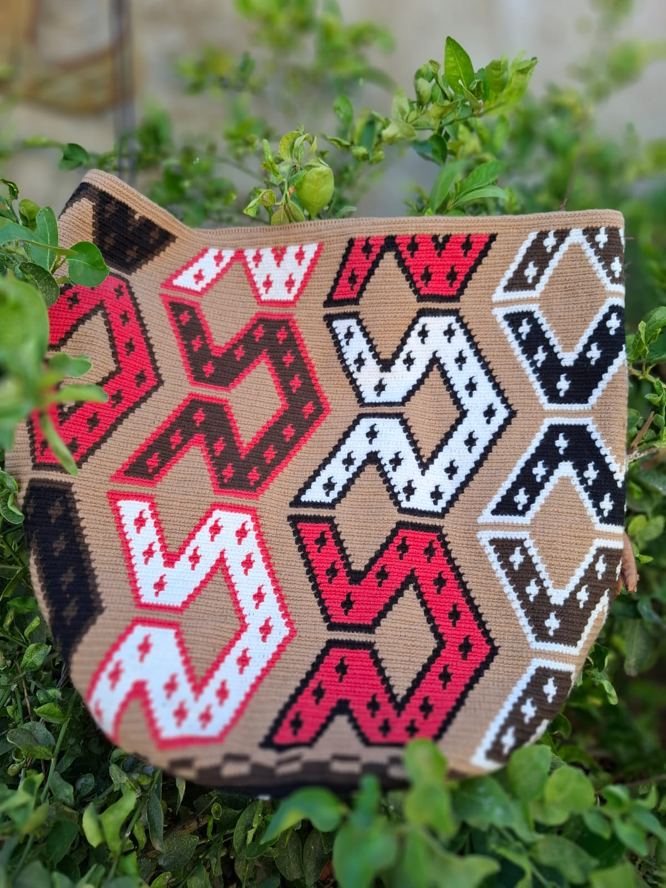
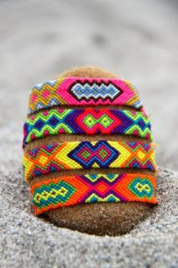

Artesanía Wayuu que cuenta historias
Cada diseño Wayuu representa cultura, identidad y lucha

Mochila con patrón de tortuga ancestral - símbolo de protección.

Manilla color cielo - símbolo de esperanza y espiritualidad.